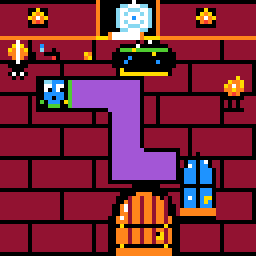
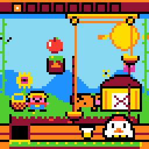
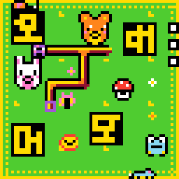
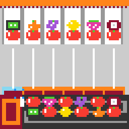
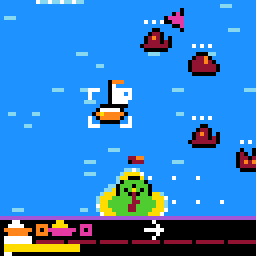
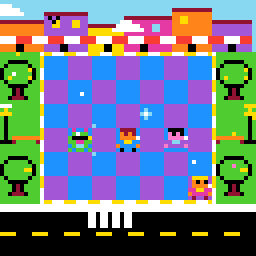
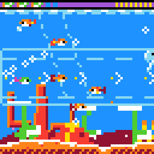

How the models played
We gave AI models the fifteen games with no instructions, the same way ARC-AGI-3 does, and recorded every move. Click a result to open its replay: the board, the model's notes, its Python calls and every frame.
On these games
GPT-6.1 Terra cleared 17 of 121 levels and finished one game, Shared Supply. Terra and Sol ran at medium reasoning with 15 minutes a game. Qwen Flash-Next, the model in our competition entry, had 30 minutes with all fifteen games sharing one GPU.
| Game | GPT-6.1 Terra | GPT-6.1 Sol | Qwen, 30 min |
|---|---|---|---|
 Eroding HorizonsEH02 | 1/876 moves · time limit | 1/868 moves · time limit | 0/810 moves |
 Basket LiftBL02 | 0/8103 moves · inference timeout | – | 0/815 moves |
 Knot TyingKT03 | 2/10386 moves · time limit | – | 1/1015 moves |
ST02 | 2/887 moves · time limit | – | 0/810 moves |
 Shared SupplySS01 | 8/8229 moves · completed | – | 0/865 moves |
PT02 | 0/879 moves · time limit | 2/882 moves · inference timeout | 0/812 moves |
DZ03 | 0/8109 moves · inference timeout | 1/883 moves · inference timeout | 0/819 moves |
 Windy BoatsWB03 | 0/877 moves · time limit | – | 0/818 moves |
BS02 | 1/892 moves · inference timeout | – | 0/822 moves |
TE02 | 0/896 moves · time limit | – | 0/817 moves |
WF03 | 1/871 moves · time limit | – | 0/831 moves |
LT05 | 0/946 moves · time limit | – | 0/923 moves |
 Extreme SneezeES02 | 1/899 moves · inference timeout | – | 0/862 moves |
SE02 | 0/675 moves · inference timeout | – | 0/613 moves |
 Feeding FrenzyFF02 | 1/8342 moves · time limit | – | 0/88 moves |
Levels cleared out of the game's total; a dash means that model did not play it. A shorter 15-minute Qwen run cleared no levels (its replays). Qwen and the GPT models used different harness prompts, views of the board and numbers of games at once, so this compares setups, not models alone.
Against people
On Shared Supply (SS01), Terra completed all eight levels in 229 actions; the recorded human completed them in 484. Eroding Horizons (EH02) is the only featured game with per-level human baselines in the team records: on level one the human used 25 actions, Terra used 27, and Sol used 10. Using ARC's squared efficiency formula and per-level cap, that is about 86% for Terra and 115% for Sol on that level. EH02's baseline comes from one recorded player; SS01 has only a game-wide human total, so its per-level score cannot be worked out from that record.
On other people's games
Terra also played three games from Red Blue Pill and all of the homemade games in Simon Ouellette's collection, with the same 15-minute setup. It finished all three Red Blue Pill games and cleared 129 of 153 levels across Simon's. Their rules were not changed; the codes are our short names for them.
| Game | From | GPT-6.1 Terra |
|---|---|---|
MM01 | Red Blue Pill | 7/7131 moves · completed |
SK01 | Red Blue Pill | 5/5157 moves · completed |
RS01 | Red Blue Pill | 5/5600 moves · completed |
SO01 | Simon Ouellette | 6/7222 moves · inference timeout |
SO02 | Simon Ouellette | 4/7855 moves · inference timeout |
SO03 | Simon Ouellette | 1/7157 moves · inference timeout |
SO04 | Simon Ouellette | 1/7341 moves · inference timeout |
SO05 | Simon Ouellette | 7/71002 moves · completed |
SO06 | Simon Ouellette | 6/670 moves · completed |
Badge Placement SO07 | Simon Ouellette | 7/7426 moves · completed |
Ball Sifting SO08 | Simon Ouellette | 6/6537 moves · completed |
Flood SO09 | Simon Ouellette | 7/7440 moves · completed |
Ice Rink Stars SO10 | Simon Ouellette | 7/7137 moves · completed |
Klotski SO11 | Simon Ouellette | 7/7121 moves · completed |
Maze SO12 | Simon Ouellette | 7/7794 moves · completed |
One Step Tetris SO13 | Simon Ouellette | 8/877 moves · completed |
Paired Pieces SO14 | Simon Ouellette | 4/7119 moves · inference timeout |
Potion Brewer SO15 | Simon Ouellette | 6/7487 moves · time limit |
Projectile Dodge SO16 | Simon Ouellette | 7/7189 moves · completed |
Rail Selector SO17 | Simon Ouellette | 7/7128 moves · completed |
Sheep Herder SO18 | Simon Ouellette | 4/7479 moves · inference timeout |
Sokoban SO19 | Simon Ouellette | 7/7341 moves · completed |
Symmetric Maze SO20 | Simon Ouellette | 7/7117 moves · completed |
Tile Rotation SO21 | Simon Ouellette | 7/7121 moves · completed |
Toy Train SO22 | Simon Ouellette | 6/71025 moves · time limit |
These runs had no human baselines. Source versions · Simon game list · Starting screens